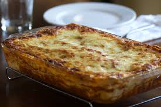

Home
Lasagna

Description
The perfect dish, whether it's for a hearty weekday meal
or to wow people at a dinner party. This is the recipe for you.
Ingredients
- Extra virgin olive oil
- Minced beef
- Onion
- Carrot
- Celery
- Garlic
- Red wine
- Tinned tomatoes
- Tomato paste
- Bay leaves
- 500ml of whole milk
- 50g of butter
- 50g of flour
- Nutmeg
- Lasagna sheet pasta
- Parmesan
Steps
-
First, make a bolognese sauce.
Ideally, you want to do this the night before, as the sauce develops
more flavour after being in the fridge for a while.
-
Prepare a béchamel sauce.
-
In a deep oven dish, spread a layer of bolognese and a few spoonfuls
of béchamel. Cover this with a layer of lasagna sheets (break them up to full cover the surface).
Repeat this step until you are on the last layer, on which you will spread
a layer of béchamel and a layer of finely grated parmesan cheese.
-
Cover with tinfoil and cook in a 180 degree oven for 1 hour.
Then turn the temperature to 200, remove the tinfoil and cook until the
top layer is browned and crispy.
-
Once cooked, leave to rest for at least 30 minutes, and then enjoy!